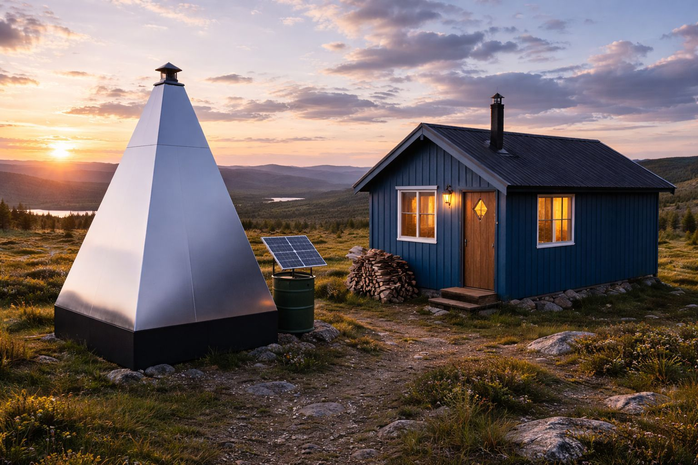
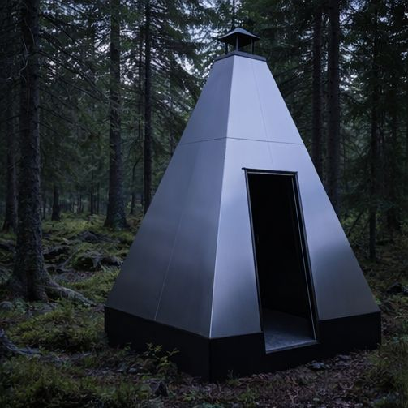
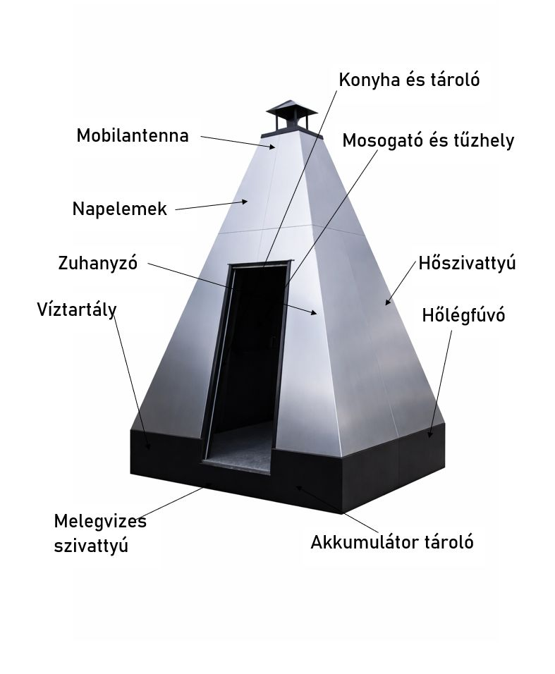
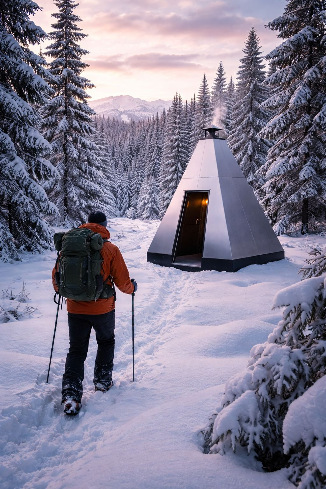
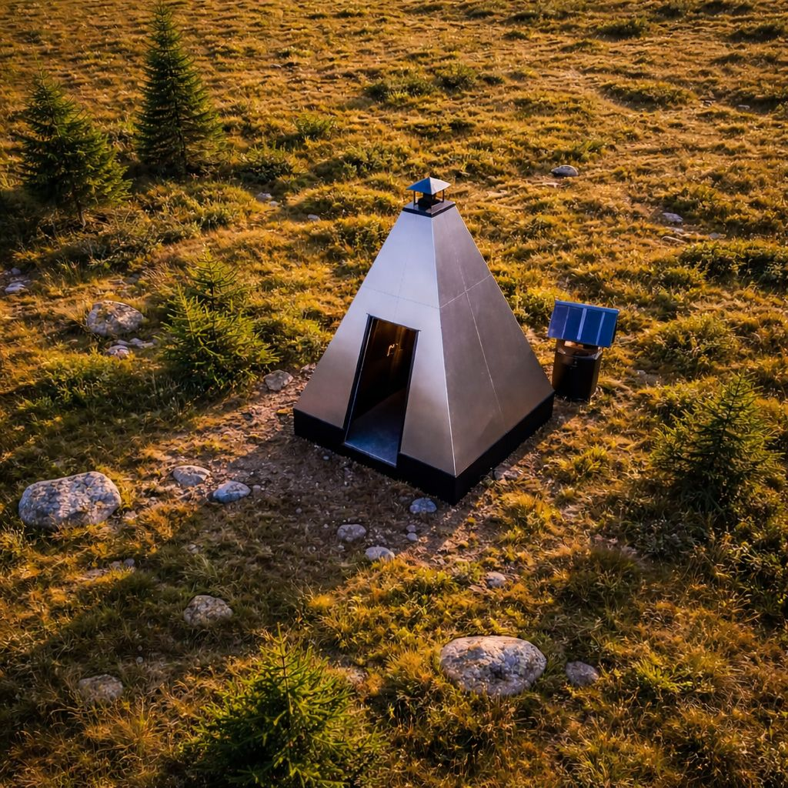
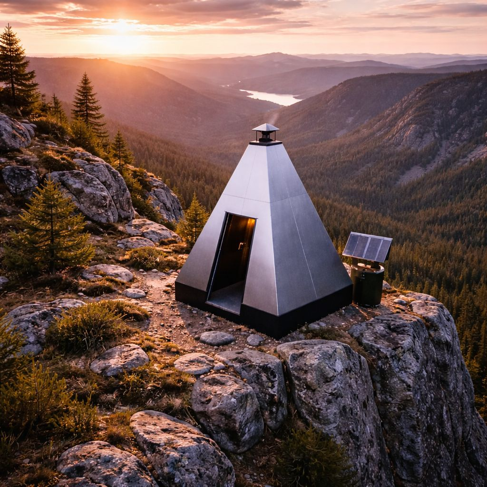
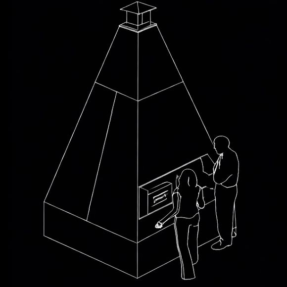
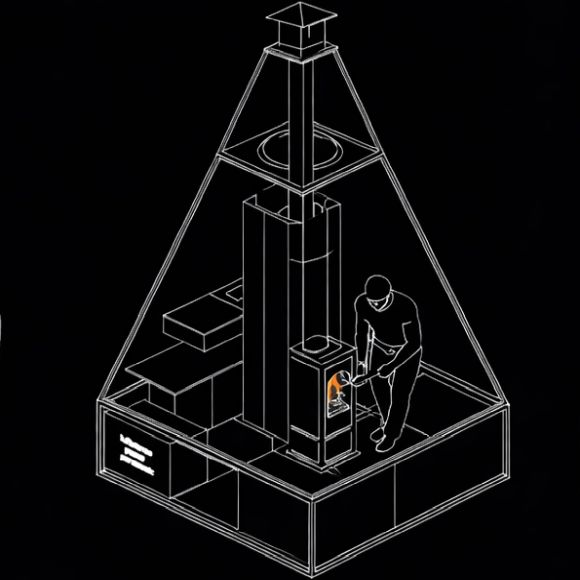
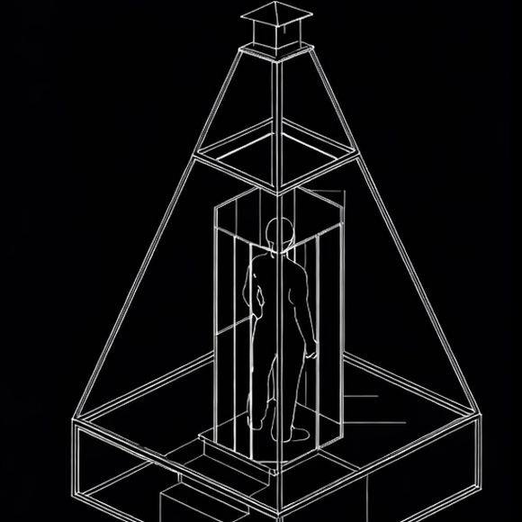
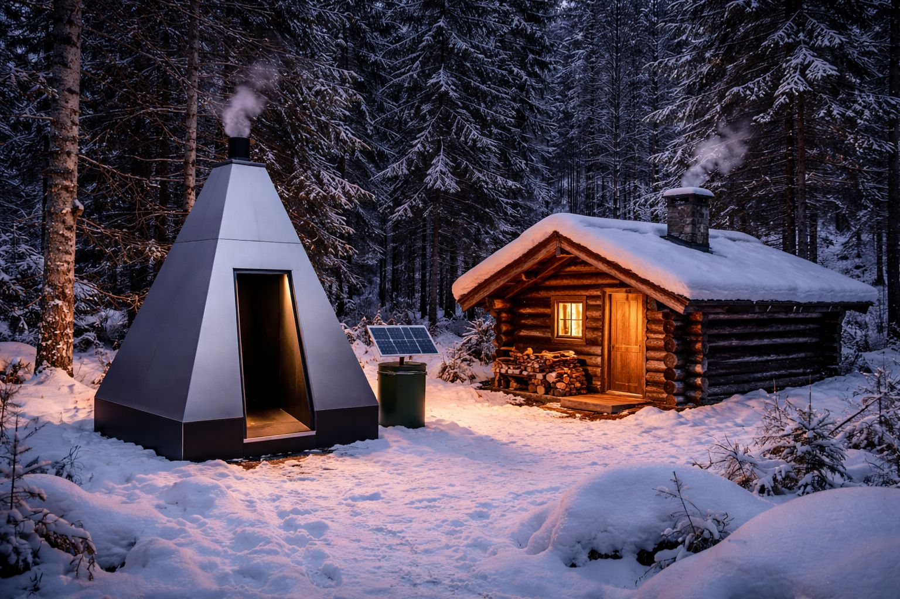

A „Vuken – off-grid” majdnem teljes közmű a vadon mélyén: futurisztikus luxus vagy a menekülő életforma új szintje?


TechVannak eszközök, amelyek egyszerűen csak megoldanak egy problémát, és vannak olyanok, amelyek egy egész életformáról kezdenek el új nyelven beszélni. A Vuken valahol ez utóbbi kategóriába tartozik. Első pillantásra inkább tűnik egy minimalista, sötét tónusú design-objektnak, mint valódi infrastruktúrának, mégis pont ez benne a legérdekesebb: nem ház akar lenni, hanem minden, ami egy házból a legnehezebben kivitelezhető.
Az off-grid élet eddig leginkább kompromisszumokat jelentett. Áramhoz rendszer kellett, vízhez külön megoldás, mosakodáshoz barkácsolás, internethez szerencse, a mindennapi kényelemhez pedig sok tervezés és még több türelem. A Vuken ebbe a világba érkezik úgy, mintha valaki fogta volna a teljes közműlogikát, és összecsomagolta volna egyetlen kompakt, telepíthető testbe. Nem maga a kunyhó, nem maga a menedék, hanem a civilizáció sűrített háttérországa.
Nem kabin, hanem a kabin mögötti teljes háttérrendszer
Éppen ezért a Vukent nem érdemes a klasszikus tiny house-ok vagy hétvégi házak logikájával nézni. Ez nem az a tárgy, amiben a nappali, a háló és a panoráma együtt lakik, hanem az a tárgy, ami lehetővé teszi, hogy bármi más végre működőképes legyen mellette. Egy eldugott erdei épület, egy kis menedékház, egy műterem, egy távoli telek vagy akár egy ideiglenes visszavonulóhely egészen más értelmet kap, ha a közművesítés nem egy több hónapos, költséges és idegőrlő történet.

A formája is ezt a gondolkodást erősíti. Nem próbál kedves vagy otthonos lenni a hagyományos értelemben, inkább magabiztosan funkcionális. Olyan, mint egy fekete, csendes infrastruktúra-szobor, amelynek minden oldala azt sugallja, hogy itt a megjelenés és a mérnöki logika tudatosan ugyanabba az irányba állt be.
Ez a megközelítés különösen izgalmas most, amikor egyre többen keresik a városon túli, de nem teljesen kényelmetlen élet lehetőségét. Nem mindenki akar remeteként élni, sokan inkább csak kevesebb zajt, több távolságot és nagyobb szabadságot szeretnének. A Vuken pontosan ezt a vágyat fordítja le tárgyi nyelvre: ne mondj le mindenről, csak vidd magaddal azt, ami tényleg szükséges.
És talán itt van az egész ötlet legerősebb mondata is. Nem azt mondja, hogy térj vissza a természetbe és szokj hozzá a nélkülözéshez. Inkább azt mondja: lépj ki a hálózatból, de a komfortot ne feltétlenül hagyd hátra.

„A legérdekesebb benne nem az, hogy van benne zuhany vagy áram, hanem az, hogy a vadon szélén hirtelen eltűnik az építkezési rémálom.”
A gyakorlatban is jól mutatja, mennyire sokrétű kérdés az off-grid víz, energia és működés összehangolása. A Vuken vonzereje éppen abból fakad, hogy ebből a kusza feladatcsomagból próbál egyetlen átlátható, előre összerakott rendszert csinálni.



A vadon romantikája helyett működő hétköznapok
A legtöbb off-grid álomkép ott bukik meg, amikor a romantikából rutin lesz. Néhány látványos fotó a havas fák között vagy a hegyoldal peremén még nem mond el semmit arról, milyen minden nap vízzel, hulladékkal, árammal, higiéniával és alaphőmérséklettel foglalkozni. A Vuken koncepciója pontosan erre reagál: nem a menekülés esztétikáját árulja, hanem a rendszeres használhatóság ígéretét.
Ettől válik többé egy látványos építészeti ötletnél. Mert ha egy távoli helyen valóban lehet zuhanyozni, főzni, tölteni, csatlakozni, fűteni vagy hűteni, akkor a hely már nem csak menedék vagy kaland, hanem valós alternatíva lesz. Egy hosszú hétvége helyett akár hetekre is más dimenziót kap a kintlét.
Pont ez az a határ, amit a klasszikus barkácsmegoldások gyakran nem tudnak kényelmesen átlépni. Egy-egy napelem, hordozható akkumulátor vagy víztartály még nem jelent valódi infrastruktúrát. A Vuken mögötti gondolat viszont az, hogy a szétszórt kompromisszumok helyett inkább egy összehangolt egészet kapjon az ember.
Ez nyilván nem mindenkinek szól. Nem azoknak, akik a teljes önellátást saját kezű kísérletként akarják felépíteni, és nem is azoknak, akik a vadont kizárólag puritán túlélésként képzelik el. Inkább azoknak lehet izgalmas, akik a természetközeli létet nem szeretnék összekeverni a folyamatos technikai küzdelemmel.
Vagyis nem a romantikus szenvedést teszi modernné, hanem a távolságot teszi élhetőbbé. És ez elég erős különbség.




A nagy kérdés: szabadság vagy nagyon drága kényelem?
Persze az ilyen ötleteknél mindig megjelenik a kétkedés is. Sokak szemében ez nem más, mint egy rendkívül látványos, drága luxustárgy azoknak, akik szeretnék eljátszani, hogy kint vannak a világból, miközben valójában minden fontos funkciót magukkal visznek. Van ebben igazság, de talán nem ennyire egyszerű a kép.
Mert a szabadság ma már nem mindig azt jelenti, hogy valaki mindentől megszabadul. Néha inkább azt, hogy szelektál: melyik zajt, melyik rendszert, melyik függőséget akarja tényleg elengedni, és melyik kényelmi elem az, amit megtartana. Ha valaki elvonulna a város ritmusából, de nem akarja minden reggel a nulláról megoldani a legalapvetőbb működést, annak ez a fajta köztes megoldás nagyon is logikus lehet.
A Vuken ezért nem pusztán technikai tárgy, hanem állítás. Azt állítja, hogy az off-grid jövő nem biztos, hogy házilag összedrótozott kompromisszum lesz, hanem akár egy tudatosan tervezett, esztétikus és beköltözhető infrastruktúra is lehet. És bár elsőre talán túl futurisztikusnak tűnik, valójában pontosan arra a problémára válaszol, amelyet a legtöbb ember azonnal érez, amikor a vadon közepén szeretne komfortosan időt tölteni: jó a csend, jó a távolság, csak működjön minden.
Akár futurisztikus luxusnak, akár okos infrastruktúrának nevezzük, a Vuken biztosan eltalál egy nagyon mai vágyat. Azt az elképzelést, hogy a természetközeli élet ne automatikusan lemondás, hanem tudatosan válogatott egyszerűség legyen. És ha ez a gondolat tényleg egyre több embert kezd el vonzani, akkor könnyen lehet, hogy a jövő menedékházai nem önmagukban lesznek érdekesek, hanem a mellettük álló, csendesen dolgozó közműmag miatt.

Kertes Réka
2026. március 09. 11:07Nagy Vince
2026. március 06. 13:11